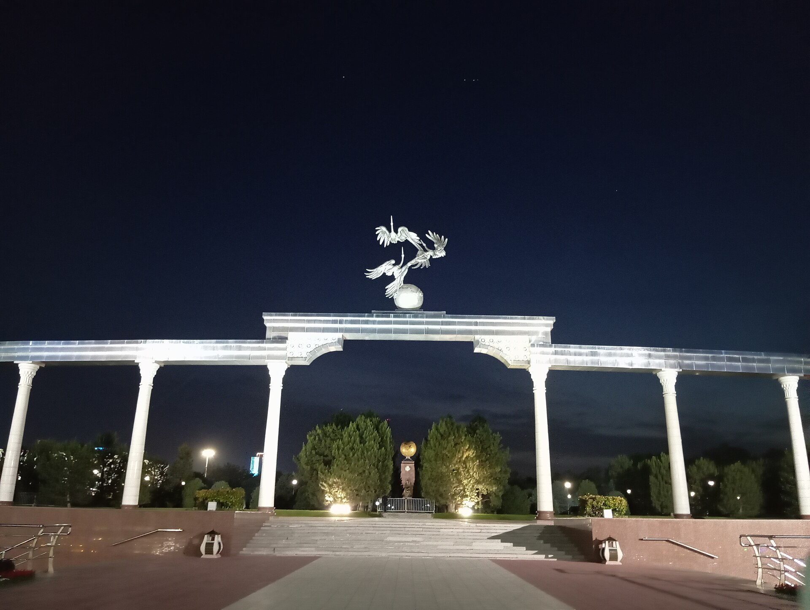

Toshkent Kollektiv Xavfsizlik Shartnomasi (1992-yil 15-may) va Oʻzbekiston
1992-yil 15-mayda Toshkentda Kollektiv Xavfsizlik Shartnomasi (KXSh) imzolandi — keyinchalik Kollektiv Xavfsizlik Shartnomasi Tashkiloti (KXShT/ODKB) shundan oʻsib chiqdi. Dastlabki olti imzolovchi: Rossiya, Armaniston, Qozogʻiston, Qirgʻiziston, Tojikiston va Oʻzbekiston. Shartnoma 1994-yil 20-aprelda besh yillik muddatga kuchga kirdi. Oʻzbekiston 1999-yilda uni uzaytirmadi, 2006-yilda qayta qoʻshildi, 2012-yilda esa aʼzoligini toʻxtatdi. 2012-yilda qabul qilingan tashqi siyosat konsepsiyasi harbiy bloklarga qoʻshilmaslik, chet el harbiy bazalariga yoʻl qoʻymaslik va qoʻshinni chet elga yubormaslikni belgiladi. Tasdiqlangan faktlar asosida.

Mustaqillikning ilk yillarida Oʻzbekiston oʻz poytaxtida yirik xavfsizlik shartnomasini imzolagan, keyin esa undan ikki marta chetlashib, oxir-oqibat betaraflik yoʻlini tanlagan. Bu — yosh davlatning mustaqil tashqi siyosat yuritishini koʻrsatuvchi faktlarga asoslangan tarix. Quyida faqat tasdiqlangan sanalar va faktlar (KXShT rasmiy manbalari va boshqa ishonchli manbalar) keltiriladi.
1992-yil 15-may: shartnoma imzolanishi
Kollektiv Xavfsizlik Shartnomasi (Toshkent shartnomasi) 1992-yil 15-mayda Toshkentda, MDH doirasida imzolandi. Dastlabki olti imzolovchi davlat: Rossiya, Armaniston, Qozogʻiston, Qirgʻiziston, Tojikiston va Oʻzbekiston. Oʻsha paytda Oʻzbekiston prezidenti Islom Karimov edi; mamlakat mustaqillikni 1991-yil 1-sentabrda eʼlon qilgan edi.
Kengayishi va kuchga kirishi (1993–1994)
1993-yilda shartnomaga yana uch davlat — Ozarbayjon, Gruziya va Belarus qoʻshildi. Shartnoma milliy ratifikatsiyalar tugagach, 1994-yil 20-aprelda besh yillik muddatga kuchga kirdi (keyinchalik uzaytirish nazarda tutilgan).
4-modda: kollektiv himoya
Shartnomaning 4-moddasiga koʻra, aʼzo davlatlardan biriga qarshi tajovuz (xavfsizlik, barqarorlik, hududiy yaxlitlik va suverenitetga tahdid soluvchi qurolli hujum) barcha aʼzo davlatlarga qarshi tajovuz deb hisoblanadi; qolgan aʼzolar, jabrlangan davlat iltimosiga koʻra, BMT Nizomining 51-moddasidagi kollektiv himoya huquqiga muvofiq zudlik bilan zarur yordam, shu jumladan harbiy yordam koʻrsatadi.
1999: Oʻzbekiston uzaytirmadi
1999-yilda shartnoma birinchi besh yillik muddat tugab, uzaytirishga qoʻyilganda Ozarbayjon, Gruziya va Oʻzbekiston uzaytirish bayonnomasini imzolamay, shartnomadan chiqdi. Qolgan oltitasi — Armaniston, Belarus, Qozogʻiston, Qirgʻiziston, Rossiya va Tojikiston uzaytirishni imzoladi.
2002: Tashkilotga aylanishi (KXShT)
1992-yilgi Shartnoma asosida 2002-yilda Tashkilot tuzildi: KXShT (Kollektiv Xavfsizlik Shartnomasi Tashkiloti, ruscha ODKB) nizomi 2002-yil 7-oktabrda Moldovaning Kishinyov shahridagi MDH sammitida imzolandi va 2003-yilda kuchga kirdi (BMTda 2003-yil dekabrda roʻyxatdan oʻtkazildi). Muhim farq: 1992-yil — Shartnomaning oʻzi (KXSh, “Toshkent shartnomasi”), 2002-yil — shu asosda qurilgan Tashkilot (KXShT).
Oʻzbekiston: qaytish (2006) va toʻxtatish (2012)
Oʻzbekiston 2006-yilda KXShTga qayta qoʻshildi (yozda aʼzolik tiklandi; parlament ratifikatsiyasi 2008-yil 28-martda boʻlgan) — bu 2005-yil Andijon voqealaridan keyin Gʻarb bilan munosabatlar keskinlashgan davrga toʻgʻri keldi. 2012-yil iyunida Oʻzbekiston KXShT kotibiyatiga xat yoʻllab, aʼzoligini toʻxtatdi; Tashkilot bu toʻxtatishni 2012-yil 19-dekabrda rasman tasdiqladi.
Betaraflik siyosati
2012-yil avgustda Oʻzbekiston Oliy Majlisi mamlakatning birinchi Tashqi siyosat faoliyati konsepsiyasini qabul qildi; unda harbiy-siyosiy bloklarga qoʻshilmaslik, hududida chet el harbiy bazalariga yoʻl qoʻymaslik va qoʻshinni chet elga yubormaslik belgilandi. Oʻzbekiston hozirgacha KXShTdan tashqarida va betaraflik yoʻlini saqlab kelmoqda.